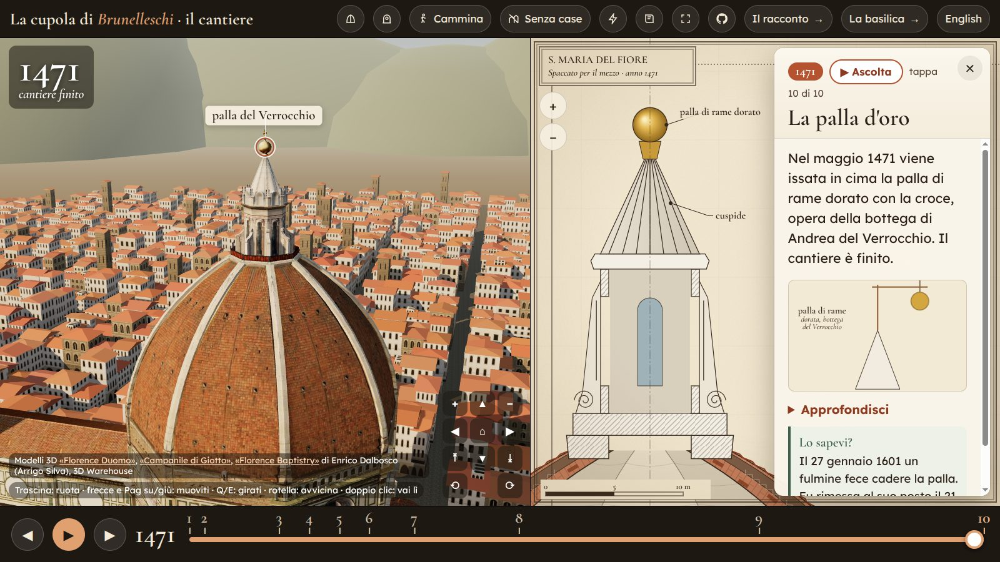
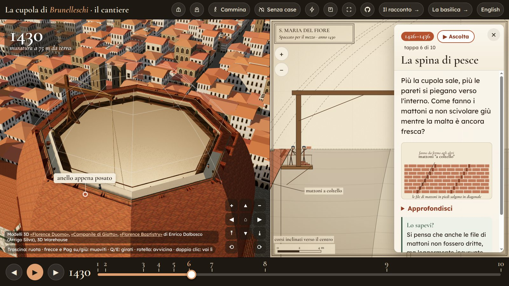
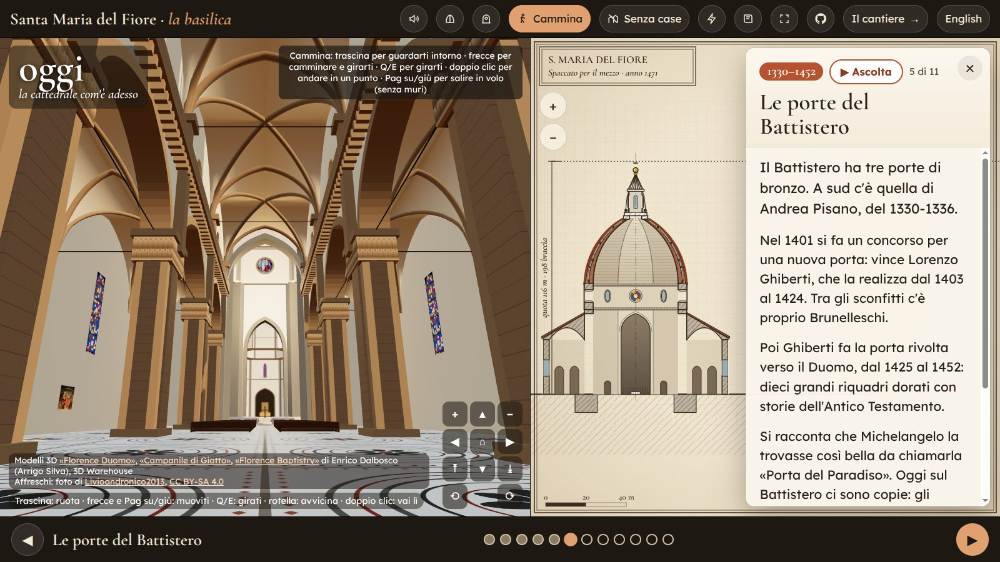

English. Three interactive 3D tours of Florence Cathedral for middle-school students: the building site, the story of the dome and the basilica.
Serve un browser con WebGL. Le pagine sono file unici e funzionano anche offline (circa 25 MB l'una). Progetto didattico open source: codice e crediti su GitHub. Modelli 3D di Enrico Dalbosco (3D Warehouse); foto da Wikimedia Commons.